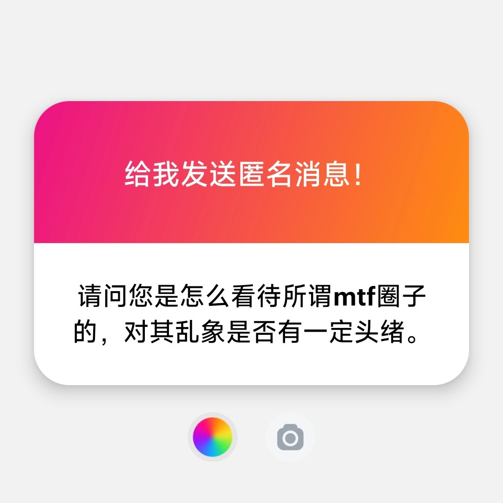

妃宫千早
@neko0202002
@luoshuyao 那有什么神人，只是被性别社会同学父母和精神疾病逼得无可救药的孩子罢了，可能以前确实觉得是神人，确实很乱，但有一个跨女，她被父母剪掉了心爱头发，送到了扭转机构，关进了精神病院，出来后她自杀了，然后就连葬礼的服装，她的父母说哪有什么性别认知障碍我觉得她喜欢酷酷的男装而不是小裙子

洛书瑶
@luoshuyao
怎么看待，大家不都是人类吗？每个人都有自己选择生活的自由，努力做自己就好。
乱象你说的是那些神人吗？我从来不关注那些人，我只关注正常人，神人我会直接远离。顺带一提，神人在哪里都是神人，不是因为在哪个圈子才是神人，这与圈子无关。 https://t.co/k1TaYlkaZB